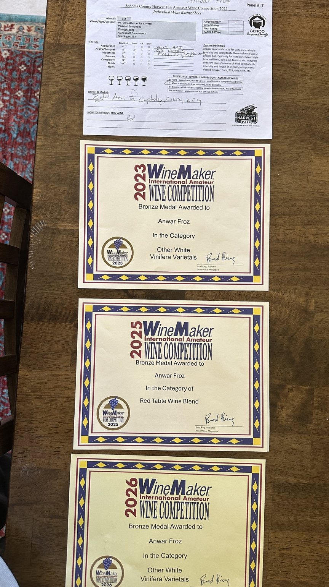
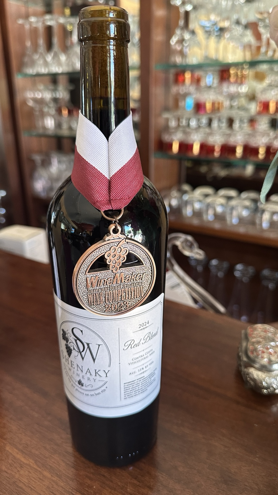
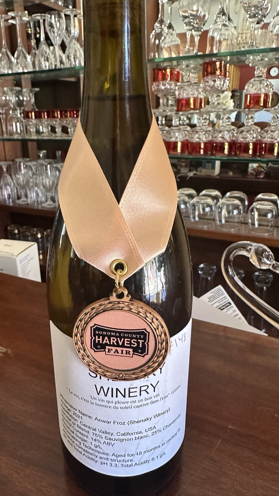
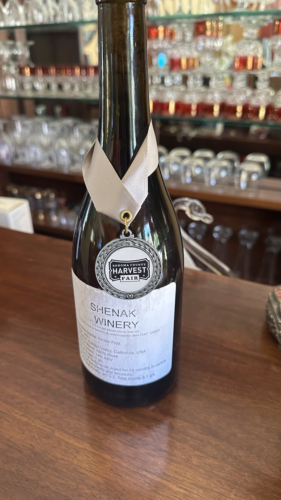

نمونهای از افتخارات
افتخاراتی در گذر سالها
نمونهای از مدالها و افتخاراتی که شرابهای شناکی دریافت کردهاند. همهٔ جوایز در این صفحه نمایش داده نشدهاند.
نمونهای از مدالها و افتخاراتی که شرابهای شناکی دریافت کردهاند. همهٔ جوایز در این صفحه نمایش داده نشدهاند.

2026 Bronze MedalWineMaker International Amateur Wine Competition · Other White Vinifera Varietals
2025 Bronze MedalWineMaker International Amateur Wine Competition · Red Table Wine Blend
2023 Bronze MedalWineMaker International Amateur Wine Competition · Other White Vinifera Varietals
Sonoma County Harvest FairRegional recognition for Shenaky wines.
چند نمونه از افتخارات و حضور ما در مسابقات.


